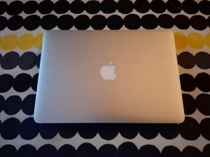

Windows
Windows 11 – Microsoftin käyttöjärjestelmä
Windows 11 on Microsoftin kehittämä käyttöjärjestelmä, joka on suunniteltu nykyaikaisille
pöytätietokoneille ja kannettaville tietokoneille. Se tarjoaa laajan valikoiman ohjelmistoja,
kattavan laitetuen ja monipuoliset ominaisuudet niin kotiin, opiskeluun kuin työelämään.
Windowsin pitkä historia näkyy sen asemassa yhtenä maailman käytetyimmistä tietokoneiden
käyttöjärjestelmistä. Tulevaisuudessa sen kehityksessä korostuvat tietoturva, pilvipalvelut ja
tekoäly.
Lue lisää
Linux
Linux – avoin ja monipuolinen käyttöjärjestelmä
Linux on avoimeen lähdekoodiin perustuva käyttöjärjestelmäydin, jonka ympärille on kehitetty
lukuisia erilaisia käyttöjärjestelmäjakeluita. Tunnettuja vaihtoehtoja ovat esimerkiksi Debian,
Ubuntu, Fedora ja Linux Mint. Linux soveltuu niin tavalliseen tietokonekäyttöön kuin
palvelimiin, supertietokoneisiin ja sulautettuihin järjestelmiin. Sen vahvuuksia ovat
joustavuus, muokattavuus ja laajat mahdollisuudet vaikuttaa järjestelmän toimintaan.
Tulevaisuudessa Linuxin merkitys säilyy vahvana erityisesti palvelimissa, ohjelmistokehityksessä
ja avoimissa teknologiaratkaisuissa.
Lue lisää
macOS

macOS – Applen tietokoneiden käyttöjärjestelmä
macOS on Applen Mac-tietokoneille kehittämä käyttöjärjestelmä, jossa yhdistyvät graafinen
käyttöliittymä, Unix-pohjainen teknologia ja tiivis yhteys Applen laitteisiin. Se soveltuu
monipuolisesti päivittäiseen tietokonekäyttöön, ohjelmointiin sekä luovaan työhön, kuten
musiikin tuotantoon ja videoeditointiin. macOS vahvuuksia ovat yhtenäinen käyttökokemus,
tietoturva ja Applen laitteiden välinen yhteistoiminta. Tulevaisuuden kehityksessä painottuvat
muun muassa tekoäly, energiatehokkuus ja ekosysteemin integraatio.
Lue lisää